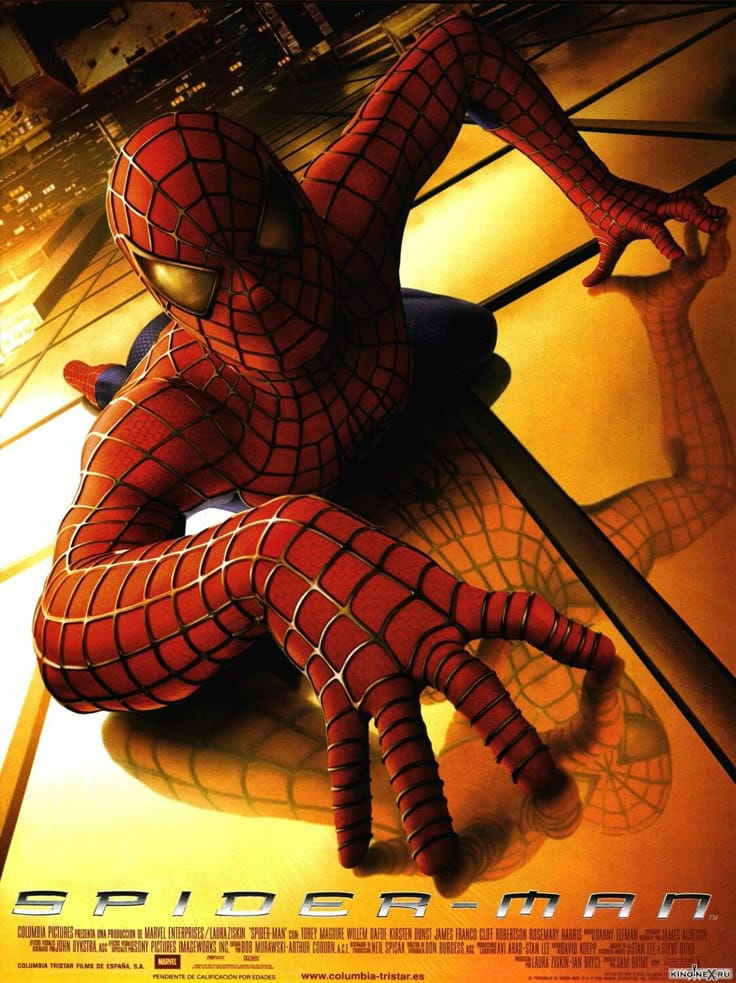
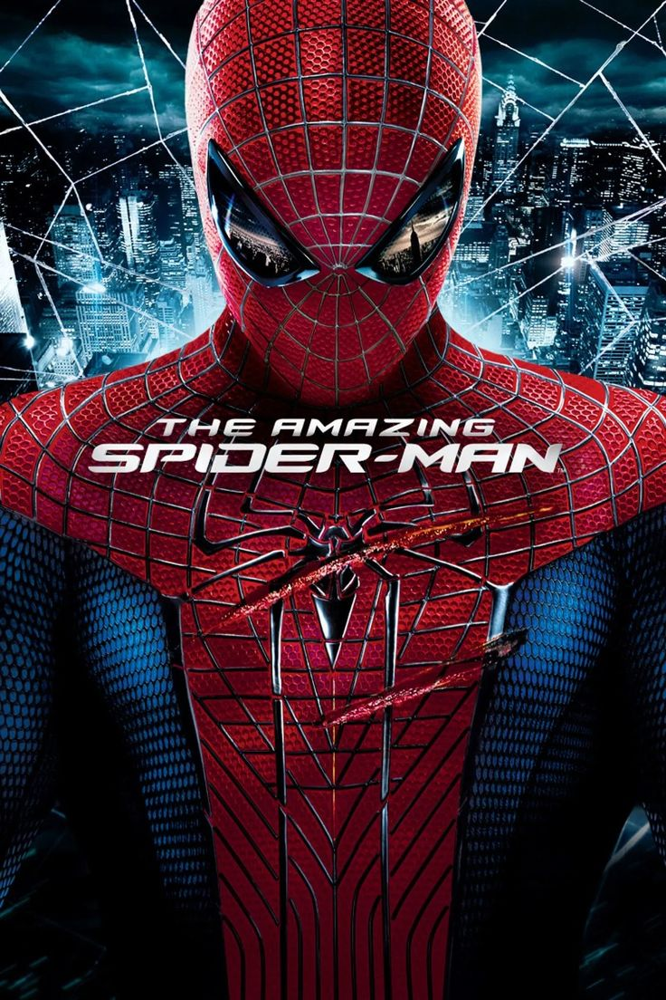
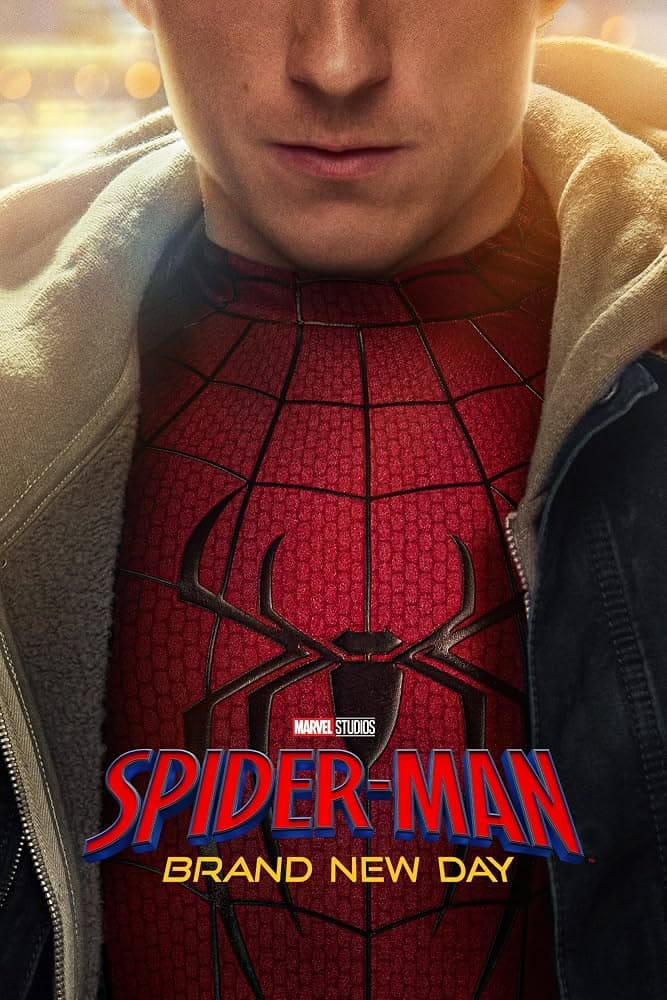

Era Tobey Maguire
2002 a 2007A trilogia de Sam Raimi mostra o início do herói, com Peter tímido, as teias saindo do pulso e vilões clássicos como o Duende Verde e o Doutor Octopus.
Ver página do atorTudo sobre o Homem-Aranha
Veja todos os filmes live-action do Homem-Aranha, de Tobey Maguire a Tom Holland, com ano, ator, direção e uma sinopse rápida de cada um.
| Filme | Ano | Ator | Direção | Sinopse |
|---|---|---|---|---|
| Homem-Aranha | 2002 | Tobey Maguire | Sam Raimi | Peter Parker é picado por uma aranha geneticamente modificada, ganha poderes e, depois da morte do Tio Ben, se torna o Homem-Aranha para enfrentar o Duende Verde. |
| Homem-Aranha 2 | 2004 | Tobey Maguire | Sam Raimi | Peter tenta conciliar a faculdade, o amor por Mary Jane e o heroísmo, e enfrenta o Doutor Octopus, um cientista dominado por seus braços mecânicos. |
| Homem-Aranha 3 | 2007 | Tobey Maguire | Sam Raimi | Com um traje preto feito de um simbionte alienígena, Peter luta contra o Homem-Areia, o Venom e o amigo Harry Osborn. |
| O Espetacular Homem-Aranha | 2012 | Andrew Garfield | Marc Webb | Peter descobre a ligação do pai com a Oscorp e enfrenta o Dr. Curt Connors, que se transforma no Lagarto, enquanto vive o romance com Gwen Stacy. |
| O Espetacular Homem-Aranha 2: A Ameaça de Electro | 2014 | Andrew Garfield | Marc Webb | Peter encara o Electro, um ex-funcionário da Oscorp que vira pura energia, e lida com o retorno de Harry Osborn e o futuro com Gwen. |
| Homem-Aranha: De Volta ao Lar | 2017 | Tom Holland | Jon Watts | Peter quer provar a Tony Stark que está pronto para ser um Vingador e enfrenta o Abutre, que vende armas feitas com tecnologia alienígena. |
| Homem-Aranha: Longe de Casa | 2019 | Tom Holland | Jon Watts | Em uma viagem de escola pela Europa, Peter conhece Mysterio e precisa lidar com a perda de Tony Stark. |
| Homem-Aranha: Sem Volta Para Casa | 2021 | Tom Holland | Jon Watts | Com a identidade revelada, Peter pede ajuda ao Doutor Estranho e um feitiço abre o multiverso, trazendo vilões e outros Homens-Aranha. |
| Homem-Aranha: Brand New Day | 2026 | Tom Holland | Destin Daniel Cretton | Com os amigos sem lembrar dele, Peter protege Nova York quase sozinho, com a ajuda do Justiceiro, enquanto uma ameaça misteriosa passa de pessoa em pessoa. |

A trilogia de Sam Raimi mostra o início do herói, com Peter tímido, as teias saindo do pulso e vilões clássicos como o Duende Verde e o Doutor Octopus.
Ver página do ator
Um Peter mais sombrio e brincalhão, com teias lançadas por dispositivos, a história dos pais e o romance com Gwen Stacy.
Ver página do ator
O herói entra no Universo Cinematográfico Marvel, treinado por Tony Stark, e vive uma jornada que vai do colégio até o multiverso.
Ver página do ator